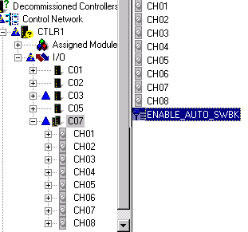

The enable auto switchback parameter
Redundant Series 2 cards have an enable automatic switchback (ENABLE_AUTO_SWBK) parameter that controls whether or not the active and standby cards switch over more than one time when faults are detected. The default is enabled (True).
ENABLE_AUTO_SWBK cannot be disabled for Redundant Series 2 Serial and H1 cards. For these cards, it is always True.
To enable or disable the parameter, select the redundant card in DeltaV Explorer, right-click ENABLE_AUTO_SWBK, and then select Properties.

When ENABLE_AUTO_SWBK is True and:
a fault occurs, the active card switches over.
the same fault occurs, the new active card does not switch over. (If both cards detect the same problem, it is probably a field error.)
a different fault occurs, the new active card switches over.
When ENABLE_AUTO_SWBK is False and:
a fault occurs, the active card switches over.
a subsequent fault occurs, the cards do not switch over until the saved fault information command is issued.
If ENABLE_AUTO_SWBK is False and the controller detects a new card in the redundant pair, a switchover will be allowed to the new card if the active card has a fault. For example, if you replace the standby card or if communications is lost and then reestablished with the standby card, a switchover can occur even if ENABLE_AUTO_SWBK is False.
The decision to enable or disable automatic switchback depends on the requirements of your process and the importance of the card. Disabling ENABLE_AUTO_SWBK requires manual intervention for switchovers to occur but prevents cards from frequently switching over. On the other hand, enabling ENABLE_AUTO_SWBK causes cards to switch over but, under certain circumstances, can result in frequent switchovers.